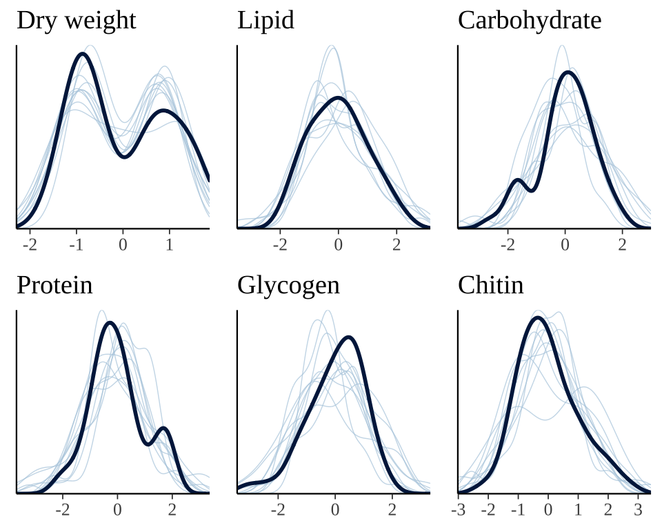
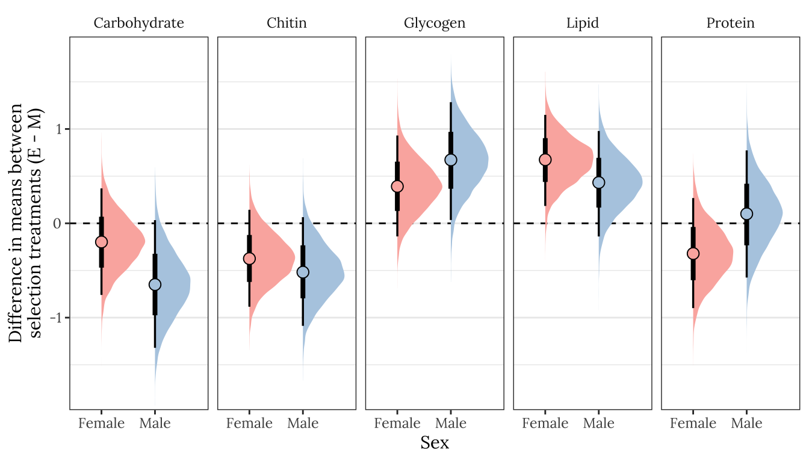
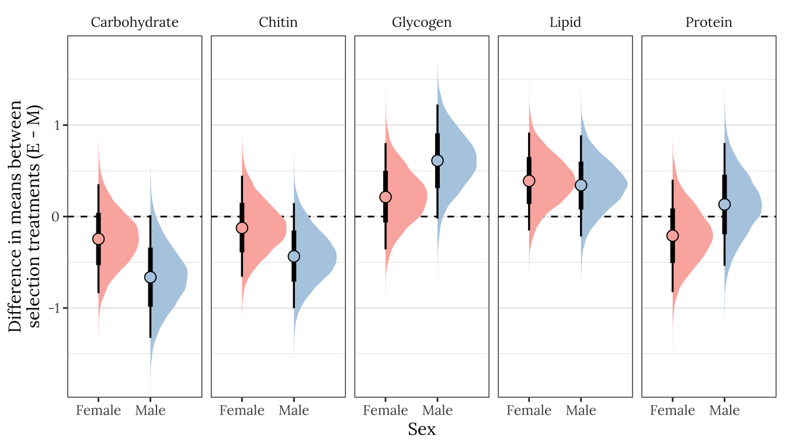
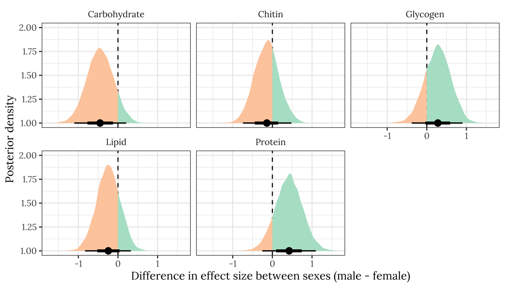
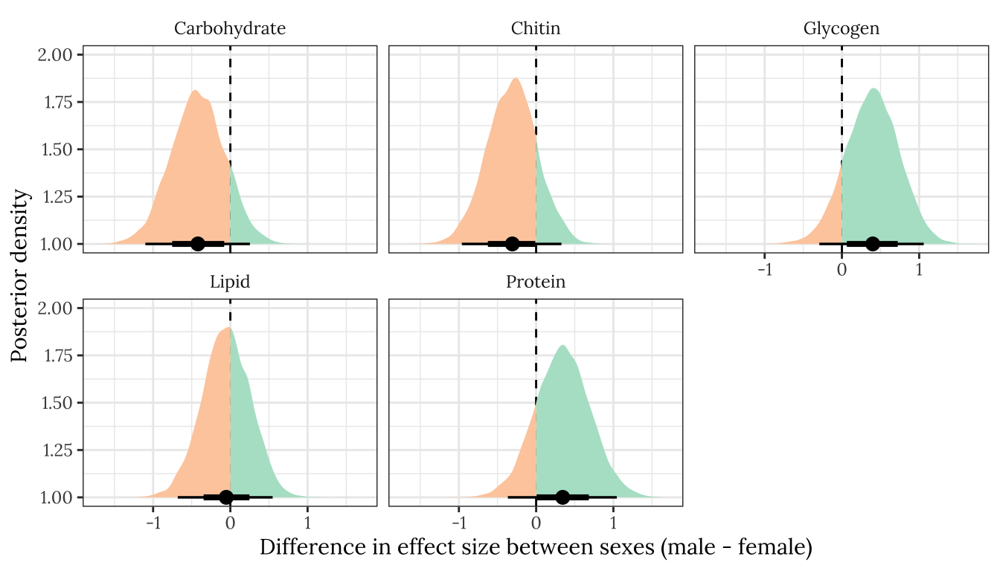

Metabolite composition
Last updated: 2020-12-11
Checks: 7 0
Knit directory: exp_evol_respiration/
This reproducible R Markdown analysis was created with workflowr (version 1.6.2). The Checks tab describes the reproducibility checks that were applied when the results were created. The Past versions tab lists the development history.
Great! Since the R Markdown file has been committed to the Git repository, you know the exact version of the code that produced these results.
Great job! The global environment was empty. Objects defined in the global environment can affect the analysis in your R Markdown file in unknown ways. For reproduciblity it’s best to always run the code in an empty environment.
The command set.seed(20190703) was run prior to running the code in the R Markdown file. Setting a seed ensures that any results that rely on randomness, e.g. subsampling or permutations, are reproducible.
Great job! Recording the operating system, R version, and package versions is critical for reproducibility.
Nice! There were no cached chunks for this analysis, so you can be confident that you successfully produced the results during this run.
Great job! Using relative paths to the files within your workflowr project makes it easier to run your code on other machines.
Great! You are using Git for version control. Tracking code development and connecting the code version to the results is critical for reproducibility.
The results in this page were generated with repository version 328e117. See the Past versions tab to see a history of the changes made to the R Markdown and HTML files.
Note that you need to be careful to ensure that all relevant files for the analysis have been committed to Git prior to generating the results (you can use wflow_publish or wflow_git_commit). workflowr only checks the R Markdown file, but you know if there are other scripts or data files that it depends on. Below is the status of the Git repository when the results were generated:
Ignored files:
Ignored: .DS_Store
Ignored: .Rproj.user/
Ignored: analysis/.DS_Store
Unstaged changes:
Deleted: output/brms_metabolite_SEM.rds
Note that any generated files, e.g. HTML, png, CSS, etc., are not included in this status report because it is ok for generated content to have uncommitted changes.
These are the previous versions of the repository in which changes were made to the R Markdown (analysis/metabolites.Rmd) and HTML (docs/metabolites.html) files. If you’ve configured a remote Git repository (see ?wflow_git_remote), click on the hyperlinks in the table below to view the files as they were in that past version.
| File | Version | Author | Date | Message |
|---|---|---|---|---|
| Rmd | 328e117 | lukeholman | 2020-12-11 | Tweaks |
| html | 49e7792 | lukeholman | 2020-12-11 | Build site. |
| Rmd | 9d65fc7 | lukeholman | 2020-12-11 | Tweaks |
| html | 2911fb9 | lukeholman | 2020-12-10 | Build site. |
| Rmd | 184b0a4 | lukeholman | 2020-12-10 | Tweaks |
| html | a361e42 | lukeholman | 2020-12-10 | Build site. |
| Rmd | 98c43b5 | lukeholman | 2020-12-10 | Tweaks |
| html | 7fca240 | lukeholman | 2020-12-10 | Build site. |
| Rmd | 125d4a2 | lukeholman | 2020-12-10 | Tweaks |
| html | 31ed22a | lukeholman | 2020-12-10 | Build site. |
| Rmd | 8464a7f | lukeholman | 2020-12-10 | Tweaks |
| html | 901053c | lukeholman | 2020-12-10 | Build site. |
| Rmd | 904af31 | lukeholman | 2020-12-10 | Tweaks |
| html | f7c88a2 | lukeholman | 2020-12-10 | Build site. |
| Rmd | 68780f6 | lukeholman | 2020-12-10 | Tweaks |
| html | deb7183 | lukeholman | 2020-12-09 | Build site. |
| Rmd | 720eb6d | lukeholman | 2020-12-09 | Tweaks |
| html | b731971 | lukeholman | 2020-12-09 | Build site. |
| Rmd | 398d963 | lukeholman | 2020-12-09 | Tweaks |
| html | b449eb3 | lukeholman | 2020-12-09 | Build site. |
| Rmd | 15f3c92 | lukeholman | 2020-12-09 | Tweaks |
| html | 43cc270 | lukeholman | 2020-12-09 | Build site. |
| Rmd | 2642c27 | lukeholman | 2020-12-09 | More work |
| html | 4f5ee28 | lukeholman | 2020-12-04 | Build site. |
| Rmd | d441b69 | lukeholman | 2020-12-04 | Luke metabolites analysis |
| Rmd | c8feb2d | lukeholman | 2020-11-30 | Same page with Martin |
| html | 3fdbcb2 | lukeholman | 2020-11-30 | Tweaks Nov 2020 |
Load packages
library(tidyverse)
library(GGally)
library(gridExtra)
library(ggridges)
library(brms)
library(tidybayes)
library(DT)
library(kableExtra)
library(knitrhooks) # install with devtools::install_github("nathaneastwood/knitrhooks")
output_max_height() # a knitrhook option
options(stringsAsFactors = FALSE)Load metabolite composition data
This analysis set out to test whether sexual selection treatment had an effect on metabolite composition of flies. We measured fresh and dry fly weight in milligrams, plus the weights of five metabolites which together equal the dry weight. These are:
Lipid_conc(i.e. the weight of the hexane fraction, divided by the full dry weight),Carbohydrate_conc(i.e. the weight of the aqueous fraction, divided by the full dry weight),Protein_conc(i.e. \(\mu\)g of protein per milligram as measured by the bicinchoninic acid protein assay),Glycogen_conc(i.e. \(\mu\)g of glycogen per milligram as measured by the hexokinase assay), andChitin_conc(estimated as the difference between the initial and final dry weights)
We expect body weight to vary between the sexes and potentially between treatments. In turn, we expect body weight to affect our five response variables of interest. Larger flies will have more lipids, carbs, etc., and this may vary by sex and treatment both directly and indirectly.
metabolites <- read_csv('data/3.metabolite_data.csv') %>%
mutate(sex = ifelse(sex == "m", "Male", "Female"),
line = paste(treatment, line, sep = ""),
treatment = ifelse(treatment == "M", "Monogamy", "Polyandry")) %>%
# log transform glycogen since it shows a long tail (others are reasonably normal-looking)
mutate(Glycogen_ug_mg = log(Glycogen_ug_mg)) %>%
# There was a technical error with flies collected on day 1,
# so they are excluded from the whole paper. All the measurements analysed are of 3d-old flies
filter(time == '2') %>%
select(-time)
scaled_metabolites <- metabolites %>%
# Find proportional metabolites as a proportion of total dry weight
mutate(
Dry_weight = dwt_mg,
Lipid_conc = Hex_frac / Dry_weight,
Carbohydrate_conc = Aq_frac / Dry_weight,
Protein_conc = Protein_ug_mg,
Glycogen_conc = Glycogen_ug_mg,
Chitin_conc = Chitin_mg_mg) %>%
select(sex, treatment, line, Dry_weight, ends_with("conc")) %>%
mutate_at(vars(ends_with("conc")), ~ as.numeric(scale(.x))) %>%
mutate(Dry_weight = as.numeric(scale(Dry_weight))) %>%
mutate(sextreat = paste(sex, treatment),
sextreat = replace(sextreat, sextreat == "Male Monogamy", "M males"),
sextreat = replace(sextreat, sextreat == "Male Polyandry", "P males"),
sextreat = replace(sextreat, sextreat == "Female Monogamy", "M females"),
sextreat = replace(sextreat, sextreat == "Female Polyandry", "P females"),
sextreat = factor(sextreat, c("M males", "P males", "M females", "P females")))Inspect the raw data
Raw numbers
All variables are shown in standard units (i.e. mean = 0, SD = 1).
my_data_table <- function(df){
datatable(
df, rownames=FALSE,
autoHideNavigation = TRUE,
extensions = c("Scroller", "Buttons"),
options = list(
dom = 'Bfrtip',
deferRender=TRUE,
scrollX=TRUE, scrollY=400,
scrollCollapse=TRUE,
buttons =
list('csv', list(
extend = 'pdf',
pageSize = 'A4',
orientation = 'landscape',
filename = 'Apis_methylation')),
pageLength = 50
)
)
}
scaled_metabolites %>%
select(-sextreat) %>%
mutate_if(is.numeric, ~ format(round(.x, 3), nsmall = 3)) %>%
my_data_table()Simple plots
The following plot shows how each metabolite varies between sexes and treatments, and how the consecration of each metabolite co-varies with dry weight across individuals.
levels <- c("Carbohydrate", "Chitin", "Glycogen", "Lipid", "Protein", "Dry weight")
cols <- c("M females" = "pink",
"P females" = "red",
"M males" = "skyblue",
"P males" = "blue")
grid.arrange(
scaled_metabolites %>%
rename_all(~ str_remove_all(.x, "_conc")) %>%
rename(`Dry weight` = Dry_weight) %>%
mutate(sex = factor(sex, c("Male", "Female"))) %>%
reshape2::melt(id.vars = c('sex', 'treatment', 'sextreat', 'line')) %>%
mutate(variable = factor(variable, levels)) %>%
ggplot(aes(x = sex, y = value, fill = sextreat)) +
geom_hline(yintercept = 0, linetype = 2) +
geom_boxplot() +
facet_grid( ~ variable) +
theme_bw() +
xlab("Sex") + ylab("Concentration") +
theme(legend.position = 'top') +
scale_fill_manual(values = cols, name = ""),
arrangeGrob(
scaled_metabolites %>%
rename_all(~ str_remove_all(.x, "_conc")) %>%
reshape2::melt(id.vars = c('sex', 'treatment', 'sextreat', 'line', 'Dry_weight')) %>%
mutate(variable = factor(variable, levels)) %>%
ggplot(aes(x = Dry_weight, y = value, colour = sextreat, fill = sextreat)) +
geom_smooth(method = 'lm', se = TRUE, aes(colour = NULL, fill = NULL), colour = "grey20", size = .4) +
geom_point(pch = 21, colour = "grey20") +
facet_grid( ~ variable) +
theme_bw() +
xlab("Dry weight") + ylab("Concentration") +
theme(legend.position = 'none') +
scale_colour_manual(values = cols, name = "") +
scale_fill_manual(values = cols, name = ""),
scaled_metabolites %>%
rename_all(~ str_remove_all(.x, "_conc")) %>%
reshape2::melt(id.vars = c('sex', 'treatment', 'sextreat', 'line', 'Dry_weight')) %>%
mutate(variable = factor(variable, levels)) %>%
ggplot(aes(x = Dry_weight, y = value, colour = sextreat, fill = sextreat)) +
theme_void() + ylab(NULL), nrow = 1, widths = c(0.84, 0.16)),
heights = c(0.55, 0.45)
)
Plot of correlations between variables
Some of the metabolites, especially lipid concentration, are correlated with dry weight. There is also a large difference in dry weight between sexes (and treatments, to a less extent), and sex and treatment effects are evident for some of the metabolites in the raw data. Some of the metabolites are weakly correlated with other metabolites, e.g. lipid and glycogen concentration.
modified_densityDiag <- function(data, mapping, ...) {
ggally_densityDiag(data, mapping, colour = "grey10", ...) +
scale_fill_manual(values = cols) +
scale_x_continuous(guide = guide_axis(check.overlap = TRUE))
}
modified_points <- function(data, mapping, ...) {
ggally_points(data, mapping, pch = 21, colour = "grey10", ...) +
scale_fill_manual(values = cols) +
scale_x_continuous(guide = guide_axis(check.overlap = TRUE))
}
modified_facetdensity <- function(data, mapping, ...) {
ggally_facetdensity(data, mapping, ...) +
scale_colour_manual(values = cols)
}
modified_box_no_facet <- function(data, mapping, ...) {
ggally_box_no_facet(data, mapping, colour = "grey10", ...) +
scale_fill_manual(values = cols)
}
pairs_plot <- scaled_metabolites %>%
arrange(sex, treatment) %>%
select(-line, -sex, -treatment) %>%
rename(`Sex and treatment` = sextreat) %>%
rename_all(~ str_replace_all(.x, "_", " ")) %>%
ggpairs(aes(colour = `Sex and treatment`, fill = `Sex and treatment`),
diag = list(continuous = wrap(modified_densityDiag, alpha = 0.7),
discrete = wrap("blank")),
lower = list(continuous = wrap(modified_points, alpha = 0.7, size = 1.1),
discrete = wrap("blank"),
combo = wrap(modified_box_no_facet, alpha = 0.7)),
upper = list(continuous = wrap(modified_points, alpha = 0.7, size = 1.1),
discrete = wrap("blank"),
combo = wrap(modified_box_no_facet, alpha = 0.7, size = 0.5)))
pairs_plot
| Version | Author | Date |
|---|---|---|
| 43cc270 | lukeholman | 2020-12-09 |
Mean dry weight
se <- function(x) sd(x) / sqrt(length(x))
metabolites %>%
group_by(sex, treatment) %>%
summarise(mean_dwt = mean(dwt_mg),
SE = se(dwt_mg),
n = n()) %>%
kable(digits = 3) %>% kable_styling(full_width = FALSE)| sex | treatment | mean_dwt | SE | n |
|---|---|---|---|---|
| Female | Monogamy | 0.562 | 0.019 | 12 |
| Female | Polyandry | 0.644 | 0.017 | 12 |
| Male | Monogamy | 0.330 | 0.009 | 12 |
| Male | Polyandry | 0.353 | 0.009 | 12 |
Directed acyclic graph (DAG)
This directed acyclic graph (DAG) illustrates the causal pathways that we observed between the experimental or measured variables (square boxes) and latent variables (ovals). We hypothesise that sex and mating system potentially influence dry weight as well as the metabolite composition (which we assessed by estimating the concentrations of carbohydrates, chitin, glycogen, lipids and protein). Additionally, dry weight is likely correlated with metabolite composition, and so dry weight acts as a ‘mediator variable’ between metabolite composition, and sex and treatment. The structural equation model below is built with this DAG in mind.
DiagrammeR::grViz('digraph {
graph [layout = dot, rankdir = LR]
# define the global styles of the nodes. We can override these in box if we wish
node [shape = rectangle, style = filled, fillcolor = Linen]
"Metabolite\ncomposition" [shape = oval, fillcolor = Beige]
# edge definitions with the node IDs
"Mating system\ntreatment (M vs P)" -> {"Dry weight"}
"Mating system\ntreatment (M vs P)" -> {"Metabolite\ncomposition"}
"Sex\n(Female vs Male)" -> {"Dry weight"} -> {"Metabolite\ncomposition"}
"Sex\n(Female vs Male)" -> {"Metabolite\ncomposition"}
{"Metabolite\ncomposition"} -> "Carbohydrates"
{"Metabolite\ncomposition"} -> "Chitin"
{"Metabolite\ncomposition"} -> "Glycogen"
{"Metabolite\ncomposition"} -> "Lipids"
{"Metabolite\ncomposition"} -> "Protein"
}')Fit brms structural equation model
Here we fit a model of the five metabolites, which includes dry body weight as a mediator variable. That is, our model estimates the effect of treatment, sex and line (and all the 2- and 3-way interactions) on dry weight, and then estimates the effect of those some predictors (plus dry weight) on the five metabolites. The model assumes that although the different sexes, treatment groups, and lines may differ in their dry weight, the relationship between dry weight and the metabolites does not vary by sex/treatment/line. This assumption was made to constrain the number of parameters in the model, and to reflect out prior beliefs about allometric scaling of metabolites.
Define Priors
We use set fairly tight Normal priors on all fixed effect parameters, which ‘regularises’ the estimates towards zero – this is conservative (because it ensures that a stronger signal in the data is needed to produce a given posterior effect size estimate), and it also helps the model to converge. Similarly, we set a somewhat conservative half-cauchy prior (mean 0, scale 0.01) on the random effects for line (i.e. we consider large differences between lines – in terms of means and treatment effects – to be possible but improbable). We leave all other priors at the defaults used by brms. Note that the Normal priors are slightly wider in the model of dry weight, because we expect larger effect sizes of sex and treatment on dry weight than on the metabolite composition.
prior1 <- c(set_prior("normal(0, 0.5)", class = "b", resp = 'Lipid'),
set_prior("normal(0, 0.5)", class = "b", resp = 'Carbohydrate'),
set_prior("normal(0, 0.5)", class = "b", resp = 'Protein'),
set_prior("normal(0, 0.5)", class = "b", resp = 'Glycogen'),
set_prior("normal(0, 0.5)", class = "b", resp = 'Chitin'),
set_prior("normal(0, 1)", class = "b", resp = 'Dryweight'),
set_prior("cauchy(0, 0.01)", class = "sd", resp = 'Lipid', group = "line"),
set_prior("cauchy(0, 0.01)", class = "sd", resp = 'Carbohydrate', group = "line"),
set_prior("cauchy(0, 0.01)", class = "sd", resp = 'Protein', group = "line"),
set_prior("cauchy(0, 0.01)", class = "sd", resp = 'Glycogen', group = "line"),
set_prior("cauchy(0, 0.01)", class = "sd", resp = 'Chitin', group = "line"),
set_prior("cauchy(0, 0.01)", class = "sd", resp = 'Dryweight', group = "line"))
prior1 prior class coef group resp dpar nlpar bound source
normal(0, 0.5) b Lipid user
normal(0, 0.5) b Carbohydrate user
normal(0, 0.5) b Protein user
normal(0, 0.5) b Glycogen user
normal(0, 0.5) b Chitin user
normal(0, 1) b Dryweight user
cauchy(0, 0.01) sd line Lipid user
cauchy(0, 0.01) sd line Carbohydrate user
cauchy(0, 0.01) sd line Protein user
cauchy(0, 0.01) sd line Glycogen user
cauchy(0, 0.01) sd line Chitin user
cauchy(0, 0.01) sd line Dryweight user
Define the six sub-models
The fixed effects formula is sex * treatment + Dryweight (or sex * treatment in the case of the model of dry weight). The random effects part of the formula indicates that the 8 independent selection lines may differ in their means, and that the treatment effect may vary in sign/magnitude between lines. The notation | p | means that the model estimates the correlations in line effects (both slopes and intercepts) between the 6 response variables. Finally, the notation set_rescor(TRUE) means that the model should estimate the residual correlations between the response variables.
brms_formula <-
# Sub-models of the 5 metabolites
bf(mvbind(Lipid, Carbohydrate, Protein, Glycogen, Chitin) ~
sex*treatment + Dryweight + (treatment | p | line)) +
# dry weight sub-model
bf(Dryweight ~ sex*treatment + (treatment | p | line)) +
# Allow for (and estimate) covariance between the residuals of the difference response variables
set_rescor(TRUE)
brms_formulaLipid ~ sex * treatment + Dryweight + (treatment | p | line) Carbohydrate ~ sex * treatment + Dryweight + (treatment | p | line) Protein ~ sex * treatment + Dryweight + (treatment | p | line) Glycogen ~ sex * treatment + Dryweight + (treatment | p | line) Chitin ~ sex * treatment + Dryweight + (treatment | p | line) Dryweight ~ sex * treatment + (treatment | p | line)
Running the model
The model is run over 4 chains with 5000 iterations each (with the first 2500 discarded as burn-in), for a total of 2500*4 = 10,000 posterior samples.
if(!file.exists("output/brms_metabolite_SEM.rds")){
brms_metabolite_SEM <- brm(
brms_formula,
data = scaled_metabolites %>% # brms does not like underscores in variable names
rename(Dryweight = Dry_weight) %>%
rename_all(~ gsub("_conc", "", .x)),
iter = 5000, chains = 4, cores = 1,
prior = prior1,
control = list(max_treedepth = 20,
adapt_delta = 0.99)
)
saveRDS(brms_metabolite_SEM, "output/brms_metabolite_SEM.rds")
} else {
brms_metabolite_SEM <- readRDS('output/brms_metabolite_SEM.rds')
}Running /Library/Frameworks/R.framework/Resources/bin/R CMD SHLIB foo.c clang -mmacosx-version-min=10.13 -I"/Library/Frameworks/R.framework/Resources/include" -DNDEBUG -I"/Library/Frameworks/R.framework/Versions/4.0/Resources/library/Rcpp/include/" -I"/Library/Frameworks/R.framework/Versions/4.0/Resources/library/RcppEigen/include/" -I"/Library/Frameworks/R.framework/Versions/4.0/Resources/library/RcppEigen/include/unsupported" -I"/Library/Frameworks/R.framework/Versions/4.0/Resources/library/BH/include" -I"/Library/Frameworks/R.framework/Versions/4.0/Resources/library/StanHeaders/include/src/" -I"/Library/Frameworks/R.framework/Versions/4.0/Resources/library/StanHeaders/include/" -I"/Library/Frameworks/R.framework/Versions/4.0/Resources/library/RcppParallel/include/" -I"/Library/Frameworks/R.framework/Versions/4.0/Resources/library/rstan/include" -DEIGEN_NO_DEBUG -DBOOST_DISABLE_ASSERTS -DBOOST_PENDING_INTEGER_LOG2_HPP -DSTAN_THREADS -DBOOST_NO_AUTO_PTR -include '/Library/Frameworks/R.framework/Versions/4.0/Resources/library/StanHeaders/include/stan/math/prim/mat/fun/Eigen.hpp' -D_REENTRANT -DRCPP_PARALLEL_USE_TBB=1 -I/usr/local/include -fPIC -Wall -g -O2 -c foo.c -o foo.o In file included from:1: In file included from /Library/Frameworks/R.framework/Versions/4.0/Resources/library/StanHeaders/include/stan/math/prim/mat/fun/Eigen.hpp:13: In file included from /Library/Frameworks/R.framework/Versions/4.0/Resources/library/RcppEigen/include/Eigen/Dense:1: In file included from /Library/Frameworks/R.framework/Versions/4.0/Resources/library/RcppEigen/include/Eigen/Core:88: /Library/Frameworks/R.framework/Versions/4.0/Resources/library/RcppEigen/include/Eigen/src/Core/util/Macros.h:613:1: error: unknown type name 'namespace' namespace Eigen { ^ /Library/Frameworks/R.framework/Versions/4.0/Resources/library/RcppEigen/include/Eigen/src/Core/util/Macros.h:613:16: error: expected ';' after top level declarator namespace Eigen { ^ ; In file included from :1: In file included from /Library/Frameworks/R.framework/Versions/4.0/Resources/library/StanHeaders/include/stan/math/prim/mat/fun/Eigen.hpp:13: In file included from /Library/Frameworks/R.framework/Versions/4.0/Resources/library/RcppEigen/include/Eigen/Dense:1: /Library/Frameworks/R.framework/Versions/4.0/Resources/library/RcppEigen/include/Eigen/Core:96:10: fatal error: 'complex' file not found #include ^~~~~~~~~ 3 errors generated. make: *** [foo.o] Error 1 SAMPLING FOR MODEL '06b14026973e5bf7a1f333b79772f0b8' NOW (CHAIN 1). Chain 1: Chain 1: Gradient evaluation took 0.000237 seconds Chain 1: 1000 transitions using 10 leapfrog steps per transition would take 2.37 seconds. Chain 1: Adjust your expectations accordingly! Chain 1: Chain 1: Chain 1: Iteration: 1 / 5000 [ 0%] (Warmup) Chain 1: Iteration: 500 / 5000 [ 10%] (Warmup) Chain 1: Iteration: 1000 / 5000 [ 20%] (Warmup) Chain 1: Iteration: 1500 / 5000 [ 30%] (Warmup) Chain 1: Iteration: 2000 / 5000 [ 40%] (Warmup) Chain 1: Iteration: 2500 / 5000 [ 50%] (Warmup) Chain 1: Iteration: 2501 / 5000 [ 50%] (Sampling) Chain 1: Iteration: 3000 / 5000 [ 60%] (Sampling) Chain 1: Iteration: 3500 / 5000 [ 70%] (Sampling) Chain 1: Iteration: 4000 / 5000 [ 80%] (Sampling) Chain 1: Iteration: 4500 / 5000 [ 90%] (Sampling) Chain 1: Iteration: 5000 / 5000 [100%] (Sampling) Chain 1: Chain 1: Elapsed Time: 40.0657 seconds (Warm-up) Chain 1: 42.7391 seconds (Sampling) Chain 1: 82.8048 seconds (Total) Chain 1: SAMPLING FOR MODEL '06b14026973e5bf7a1f333b79772f0b8' NOW (CHAIN 2). Chain 2: Chain 2: Gradient evaluation took 0.000158 seconds Chain 2: 1000 transitions using 10 leapfrog steps per transition would take 1.58 seconds. Chain 2: Adjust your expectations accordingly! Chain 2: Chain 2: Chain 2: Iteration: 1 / 5000 [ 0%] (Warmup) Chain 2: Iteration: 500 / 5000 [ 10%] (Warmup) Chain 2: Iteration: 1000 / 5000 [ 20%] (Warmup) Chain 2: Iteration: 1500 / 5000 [ 30%] (Warmup) Chain 2: Iteration: 2000 / 5000 [ 40%] (Warmup) Chain 2: Iteration: 2500 / 5000 [ 50%] (Warmup) Chain 2: Iteration: 2501 / 5000 [ 50%] (Sampling) Chain 2: Iteration: 3000 / 5000 [ 60%] (Sampling) Chain 2: Iteration: 3500 / 5000 [ 70%] (Sampling) Chain 2: Iteration: 4000 / 5000 [ 80%] (Sampling) Chain 2: Iteration: 4500 / 5000 [ 90%] (Sampling) Chain 2: Iteration: 5000 / 5000 [100%] (Sampling) Chain 2: Chain 2: Elapsed Time: 39.4029 seconds (Warm-up) Chain 2: 22.0297 seconds (Sampling) Chain 2: 61.4325 seconds (Total) Chain 2: SAMPLING FOR MODEL '06b14026973e5bf7a1f333b79772f0b8' NOW (CHAIN 3). Chain 3: Chain 3: Gradient evaluation took 0.000153 seconds Chain 3: 1000 transitions using 10 leapfrog steps per transition would take 1.53 seconds. Chain 3: Adjust your expectations accordingly! Chain 3: Chain 3: Chain 3: Iteration: 1 / 5000 [ 0%] (Warmup) Chain 3: Iteration: 500 / 5000 [ 10%] (Warmup) Chain 3: Iteration: 1000 / 5000 [ 20%] (Warmup) Chain 3: Iteration: 1500 / 5000 [ 30%] (Warmup) Chain 3: Iteration: 2000 / 5000 [ 40%] (Warmup) Chain 3: Iteration: 2500 / 5000 [ 50%] (Warmup) Chain 3: Iteration: 2501 / 5000 [ 50%] (Sampling) Chain 3: Iteration: 3000 / 5000 [ 60%] (Sampling) Chain 3: Iteration: 3500 / 5000 [ 70%] (Sampling) Chain 3: Iteration: 4000 / 5000 [ 80%] (Sampling) Chain 3: Iteration: 4500 / 5000 [ 90%] (Sampling) Chain 3: Iteration: 5000 / 5000 [100%] (Sampling) Chain 3: Chain 3: Elapsed Time: 46.2987 seconds (Warm-up) Chain 3: 42.3731 seconds (Sampling) Chain 3: 88.6718 seconds (Total) Chain 3: SAMPLING FOR MODEL '06b14026973e5bf7a1f333b79772f0b8' NOW (CHAIN 4). Chain 4: Chain 4: Gradient evaluation took 0.000146 seconds Chain 4: 1000 transitions using 10 leapfrog steps per transition would take 1.46 seconds. Chain 4: Adjust your expectations accordingly! Chain 4: Chain 4: Chain 4: Iteration: 1 / 5000 [ 0%] (Warmup) Chain 4: Iteration: 500 / 5000 [ 10%] (Warmup) Chain 4: Iteration: 1000 / 5000 [ 20%] (Warmup) Chain 4: Iteration: 1500 / 5000 [ 30%] (Warmup) Chain 4: Iteration: 2000 / 5000 [ 40%] (Warmup) Chain 4: Iteration: 2500 / 5000 [ 50%] (Warmup) Chain 4: Iteration: 2501 / 5000 [ 50%] (Sampling) Chain 4: Iteration: 3000 / 5000 [ 60%] (Sampling) Chain 4: Iteration: 3500 / 5000 [ 70%] (Sampling) Chain 4: Iteration: 4000 / 5000 [ 80%] (Sampling) Chain 4: Iteration: 4500 / 5000 [ 90%] (Sampling) Chain 4: Iteration: 5000 / 5000 [100%] (Sampling) Chain 4: Chain 4: Elapsed Time: 45.7943 seconds (Warm-up) Chain 4: 23.2955 seconds (Sampling) Chain 4: 69.0899 seconds (Total) Chain 4:
Posterior predictive check of model fit
The plot below shows that the fitted model is able to produce posterior predictions that have a similar distribution to the original data, for each of the response variables, which is a necessary condition for the model to be used for statistical inference.
grid.arrange(
pp_check(brms_metabolite_SEM, resp = "Dryweight") +
ggtitle("Dry weight") + theme(legend.position = "none"),
pp_check(brms_metabolite_SEM, resp = "Lipid") +
ggtitle("Lipid") + theme(legend.position = "none"),
pp_check(brms_metabolite_SEM, resp = "Carbohydrate") +
ggtitle("Carbohydrate") + theme(legend.position = "none"),
pp_check(brms_metabolite_SEM, resp = "Protein") +
ggtitle("Protein") + theme(legend.position = "none"),
pp_check(brms_metabolite_SEM, resp = "Glycogen") +
ggtitle("Glycogen") + theme(legend.position = "none"),
pp_check(brms_metabolite_SEM, resp = "Chitin") +
ggtitle("Chitin") + theme(legend.position = "none"),
nrow = 2
)
Table of model parameter estimates
Formatted table
This tables shows the fixed effects estimates for the treatment, sex, their interaction, as well as the slope associated with dry weight (where relevant), for each of the six response variables. The p column shows 1 - minus the “probability of direction”, i.e. the posterior probability that the reported sign of the estimate is correct given the data and the prior; subtracting this value from one gives a Bayesian equivalent of a one-sided p-value. For brevity, we have omitted all the parameter estimates involving the predictor variable line, as well as the estimates of residual (co)variance. Click the next tab to see a complete summary of the model and its output.
vars <- c("Lipid", "Carbohydrate", "Glycogen", "Protein", "Chitin")
tests <- c('_Dryweight', '_sexMale',
'_sexMale:treatmentPolyandry',
'_treatmentPolyandry')
hypSEM <- data.frame(expand_grid(vars, tests) %>%
mutate(est = NA,
err = NA,
lwr = NA,
upr = NA) %>%
# bind body weight on the end
rbind(data.frame(
vars = rep('Dryweight', 3),
tests = c('_sexMale',
'_treatmentPolyandry',
'_sexMale:treatmentPolyandry'),
est = NA,
err = NA,
lwr = NA,
upr = NA)))
for(i in 1:nrow(hypSEM)) {
result = hypothesis(brms_metabolite_SEM,
paste0(hypSEM[i, 1], hypSEM[i, 2], ' = 0'))$hypothesis
hypSEM[i, 3] = round(result$Estimate, 3)
hypSEM[i, 4] = round(result$Est.Error, 3)
hypSEM[i, 5] = round(result$CI.Lower, 3)
hypSEM[i, 6] = round(result$CI.Upper, 3)
}
pvals <- bayestestR::p_direction(brms_metabolite_SEM) %>%
as.data.frame() %>%
mutate(vars = map_chr(str_split(Parameter, "_"), ~ .x[2]),
tests = map_chr(str_split(Parameter, "_"), ~ .x[3]),
tests = str_c("_", str_remove_all(tests, "[.]")),
tests = replace(tests, tests == "_sexMaletreatmentPolyandry", "_sexMale:treatmentPolyandry")) %>%
filter(!str_detect(tests, "line")) %>%
mutate(p_val = 1 - pd, star = ifelse(p_val < 0.05, "\\*", "")) %>%
select(vars, tests, p_val, star)
hypSEM <- hypSEM %>% left_join(pvals, by = c("vars", "tests"))
hypSEM %>%
mutate(Parameter = c(rep(c('Dry weight', 'Sex (M)',
'Sex (M) x Treatment (P)',
'Treatment (P)'), 5),
'Sex (M)', 'Treatment (P)', 'Sex (M) x Treatment (P)')) %>%
mutate(Parameter = factor(Parameter, c("Dry weight", "Sex (M)", "Treatment (P)", "Sex (M) x Treatment (P)")),
vars = factor(vars, c("Carbohydrate", "Chitin", "Glycogen", "Lipid", "Protein", "Dryweight"))) %>%
arrange(vars, Parameter) %>%
select(Parameter, Estimate = est, `Est. error` = err,
`CI lower` = lwr, `CI upper` = upr, `p` = p_val, star) %>%
rename(` ` = star) %>%
kable() %>%
kable_styling(full_width = FALSE) %>%
group_rows("Carbohydrates", 1, 4) %>%
group_rows("Chitin", 5, 8) %>%
group_rows("Glycogen", 9, 12) %>%
group_rows("Lipids", 13, 16) %>%
group_rows("Protein", 17, 20) %>%
group_rows("Dry weight", 21, 23)| Parameter | Estimate | Est. error | CI lower | CI upper | p | |
|---|---|---|---|---|---|---|
| Carbohydrates | ||||||
| Dry weight | 0.105 | 0.269 | -0.419 | 0.622 | 0.3516 | |
| Sex (M) | 0.024 | 0.427 | -0.812 | 0.864 | 0.4771 | |
| Treatment (P) | -0.246 | 0.302 | -0.832 | 0.348 | 0.2074 | |
| Sex (M) x Treatment (P) | -0.414 | 0.347 | -1.090 | 0.263 | 0.1172 | |
| Chitin | ||||||
| Dry weight | -0.486 | 0.260 | -0.995 | 0.023 | 0.0314 | * |
| Sex (M) | 0.399 | 0.420 | -0.435 | 1.206 | 0.1699 | |
| Treatment (P) | -0.113 | 0.285 | -0.673 | 0.453 | 0.3405 | |
| Sex (M) x Treatment (P) | -0.317 | 0.328 | -0.957 | 0.320 | 0.1663 | |
| Glycogen | ||||||
| Dry weight | 0.332 | 0.267 | -0.180 | 0.850 | 0.1096 | |
| Sex (M) | -0.267 | 0.427 | -1.096 | 0.567 | 0.2652 | |
| Treatment (P) | 0.220 | 0.296 | -0.367 | 0.787 | 0.2244 | |
| Sex (M) x Treatment (P) | 0.387 | 0.351 | -0.297 | 1.066 | 0.1395 | |
| Lipids | ||||||
| Dry weight | 0.539 | 0.254 | 0.041 | 1.029 | 0.0171 | * |
| Sex (M) | -0.119 | 0.411 | -0.926 | 0.680 | 0.3825 | |
| Treatment (P) | 0.389 | 0.276 | -0.156 | 0.919 | 0.0774 | |
| Sex (M) x Treatment (P) | -0.050 | 0.313 | -0.672 | 0.555 | 0.4372 | |
| Protein | ||||||
| Dry weight | -0.206 | 0.275 | -0.742 | 0.340 | 0.2252 | |
| Sex (M) | -0.011 | 0.435 | -0.858 | 0.850 | 0.4844 | |
| Treatment (P) | -0.216 | 0.306 | -0.818 | 0.378 | 0.2414 | |
| Sex (M) x Treatment (P) | 0.352 | 0.361 | -0.347 | 1.057 | 0.1667 | |
| Dry weight | ||||||
| Sex (M) | -1.614 | 0.143 | -1.895 | -1.334 | 0.0000 | * |
| Treatment (P) | 0.525 | 0.155 | 0.218 | 0.827 | 0.0006 | * |
| Sex (M) x Treatment (P) | -0.354 | 0.196 | -0.733 | 0.035 | 0.0378 | * |
Complete output from summary.brmsfit()
- ‘Group-Level Effects’ (also called random effects): This shows the (co)variances associated with the line-specific intercepts (which have names like
sd(Lipid_Intercept)) and slopes (e.g.sd(Dryweight_treatmentPolyandry)), as well as the correlations between these effects (e.g.cor(Lipid_Intercept,Protein_Intercept)is the correlation in line effects on lipids and proteins) - ‘Population-Level Effects:’ (also called fixed effects): These give the estimates of the intercept (i.e. for female M flies) and the effects of treatment, sex, dry weight, and the treatment \(\times\) sex interaction, for each response variable.
- ‘Family Specific Parameters’: This is the parameter sigma for the residual variance for each response variable
- ‘Residual Correlations:’ This give the correlations between the residuals for each pairs of response variables.
Note that the model has converged (Rhat = 1) and the posterior is adequately samples (high ESS values).
brms_metabolite_SEM Family: MV(gaussian, gaussian, gaussian, gaussian, gaussian, gaussian)
Links: mu = identity; sigma = identity
mu = identity; sigma = identity
mu = identity; sigma = identity
mu = identity; sigma = identity
mu = identity; sigma = identity
mu = identity; sigma = identity
Formula: Lipid ~ sex * treatment + Dryweight + (treatment | p | line)
Carbohydrate ~ sex * treatment + Dryweight + (treatment | p | line)
Protein ~ sex * treatment + Dryweight + (treatment | p | line)
Glycogen ~ sex * treatment + Dryweight + (treatment | p | line)
Chitin ~ sex * treatment + Dryweight + (treatment | p | line)
Dryweight ~ sex * treatment + (treatment | p | line)
Data: scaled_metabolites %>% rename(Dryweight = Dry_weig (Number of observations: 48)
Samples: 4 chains, each with iter = 5000; warmup = 2500; thin = 1;
total post-warmup samples = 10000
Group-Level Effects:
~line (Number of levels: 8)
Estimate Est.Error l-95% CI u-95% CI Rhat Bulk_ESS Tail_ESS
sd(Lipid_Intercept) 0.09 0.15 0.00 0.52 1.00 1855 2733
sd(Lipid_treatmentPolyandry) 0.03 0.07 0.00 0.24 1.00 8128 4958
sd(Carbohydrate_Intercept) 0.07 0.14 0.00 0.49 1.00 3043 2670
sd(Carbohydrate_treatmentPolyandry) 0.05 0.13 0.00 0.43 1.00 5937 3170
sd(Protein_Intercept) 0.05 0.11 0.00 0.43 1.00 4709 2722
sd(Protein_treatmentPolyandry) 0.03 0.07 0.00 0.20 1.00 11030 5733
sd(Glycogen_Intercept) 0.03 0.07 0.00 0.22 1.00 8668 4932
sd(Glycogen_treatmentPolyandry) 0.03 0.06 0.00 0.18 1.00 10665 4948
sd(Chitin_Intercept) 0.07 0.12 0.00 0.44 1.00 3539 3474
sd(Chitin_treatmentPolyandry) 0.04 0.11 0.00 0.35 1.00 6341 3872
sd(Dryweight_Intercept) 0.05 0.07 0.00 0.25 1.00 2761 4938
sd(Dryweight_treatmentPolyandry) 0.03 0.05 0.00 0.17 1.00 8009 5976
cor(Lipid_Intercept,Lipid_treatmentPolyandry) 0.00 0.28 -0.53 0.52 1.00 13085 6894
cor(Lipid_Intercept,Carbohydrate_Intercept) 0.01 0.27 -0.52 0.54 1.00 13834 6815
cor(Lipid_treatmentPolyandry,Carbohydrate_Intercept) 0.00 0.27 -0.52 0.53 1.00 9816 7196
cor(Lipid_Intercept,Carbohydrate_treatmentPolyandry) -0.00 0.28 -0.53 0.53 1.00 13922 7281
cor(Lipid_treatmentPolyandry,Carbohydrate_treatmentPolyandry) 0.00 0.28 -0.53 0.55 1.00 12566 7569
cor(Carbohydrate_Intercept,Carbohydrate_treatmentPolyandry) 0.00 0.28 -0.54 0.53 1.00 11563 7714
cor(Lipid_Intercept,Protein_Intercept) 0.00 0.28 -0.52 0.54 1.00 13637 6712
cor(Lipid_treatmentPolyandry,Protein_Intercept) 0.00 0.28 -0.53 0.53 1.00 11022 7065
cor(Carbohydrate_Intercept,Protein_Intercept) 0.00 0.28 -0.53 0.53 1.00 10145 7426
cor(Carbohydrate_treatmentPolyandry,Protein_Intercept) -0.00 0.28 -0.53 0.53 1.00 9156 6841
cor(Lipid_Intercept,Protein_treatmentPolyandry) 0.00 0.28 -0.53 0.54 1.00 15294 6636
cor(Lipid_treatmentPolyandry,Protein_treatmentPolyandry) -0.00 0.27 -0.53 0.52 1.00 12057 6512
cor(Carbohydrate_Intercept,Protein_treatmentPolyandry) 0.00 0.28 -0.53 0.53 1.00 10481 7316
cor(Carbohydrate_treatmentPolyandry,Protein_treatmentPolyandry) -0.01 0.28 -0.54 0.53 1.00 9051 7446
cor(Protein_Intercept,Protein_treatmentPolyandry) 0.00 0.28 -0.53 0.54 1.00 8856 7479
cor(Lipid_Intercept,Glycogen_Intercept) 0.01 0.28 -0.52 0.54 1.00 14706 7112
cor(Lipid_treatmentPolyandry,Glycogen_Intercept) 0.00 0.28 -0.53 0.54 1.00 12127 7024
cor(Carbohydrate_Intercept,Glycogen_Intercept) 0.00 0.27 -0.52 0.54 1.00 11292 6363
cor(Carbohydrate_treatmentPolyandry,Glycogen_Intercept) -0.00 0.28 -0.53 0.53 1.00 9910 7085
cor(Protein_Intercept,Glycogen_Intercept) -0.00 0.28 -0.54 0.54 1.00 8748 7275
cor(Protein_treatmentPolyandry,Glycogen_Intercept) -0.00 0.28 -0.54 0.52 1.00 7251 7812
cor(Lipid_Intercept,Glycogen_treatmentPolyandry) 0.00 0.28 -0.53 0.54 1.00 15138 7138
cor(Lipid_treatmentPolyandry,Glycogen_treatmentPolyandry) 0.00 0.27 -0.51 0.53 1.00 12441 7367
cor(Carbohydrate_Intercept,Glycogen_treatmentPolyandry) 0.00 0.27 -0.52 0.54 1.00 10449 7529
cor(Carbohydrate_treatmentPolyandry,Glycogen_treatmentPolyandry) 0.00 0.28 -0.53 0.54 1.00 9418 7092
cor(Protein_Intercept,Glycogen_treatmentPolyandry) -0.00 0.28 -0.53 0.54 1.00 8620 7282
cor(Protein_treatmentPolyandry,Glycogen_treatmentPolyandry) -0.00 0.27 -0.53 0.52 1.00 7272 6969
cor(Glycogen_Intercept,Glycogen_treatmentPolyandry) -0.00 0.28 -0.54 0.53 1.00 6255 7043
cor(Lipid_Intercept,Chitin_Intercept) -0.00 0.28 -0.54 0.54 1.00 13268 7280
cor(Lipid_treatmentPolyandry,Chitin_Intercept) -0.00 0.27 -0.53 0.52 1.00 11731 7629
cor(Carbohydrate_Intercept,Chitin_Intercept) -0.00 0.28 -0.53 0.54 1.00 10469 7643
cor(Carbohydrate_treatmentPolyandry,Chitin_Intercept) -0.01 0.28 -0.54 0.52 1.00 8100 7306
cor(Protein_Intercept,Chitin_Intercept) 0.00 0.28 -0.52 0.54 1.00 8134 8168
cor(Protein_treatmentPolyandry,Chitin_Intercept) -0.00 0.28 -0.53 0.53 1.00 8115 7497
cor(Glycogen_Intercept,Chitin_Intercept) 0.01 0.28 -0.53 0.54 1.00 7361 8201
cor(Glycogen_treatmentPolyandry,Chitin_Intercept) -0.01 0.28 -0.53 0.53 1.00 6437 8302
cor(Lipid_Intercept,Chitin_treatmentPolyandry) -0.01 0.28 -0.54 0.53 1.00 13334 7468
cor(Lipid_treatmentPolyandry,Chitin_treatmentPolyandry) -0.00 0.27 -0.52 0.53 1.00 13046 7663
cor(Carbohydrate_Intercept,Chitin_treatmentPolyandry) -0.00 0.28 -0.54 0.53 1.00 10428 7286
cor(Carbohydrate_treatmentPolyandry,Chitin_treatmentPolyandry) 0.00 0.28 -0.53 0.54 1.00 9408 7132
cor(Protein_Intercept,Chitin_treatmentPolyandry) 0.00 0.28 -0.53 0.53 1.00 8664 7507
cor(Protein_treatmentPolyandry,Chitin_treatmentPolyandry) -0.00 0.28 -0.53 0.53 1.00 8111 7681
cor(Glycogen_Intercept,Chitin_treatmentPolyandry) 0.00 0.28 -0.54 0.53 1.00 6966 8175
cor(Glycogen_treatmentPolyandry,Chitin_treatmentPolyandry) -0.00 0.28 -0.54 0.54 1.00 6497 7897
cor(Chitin_Intercept,Chitin_treatmentPolyandry) -0.00 0.28 -0.53 0.54 1.00 6219 7985
cor(Lipid_Intercept,Dryweight_Intercept) -0.01 0.28 -0.52 0.52 1.00 13442 7316
cor(Lipid_treatmentPolyandry,Dryweight_Intercept) -0.00 0.28 -0.54 0.54 1.00 10824 7108
cor(Carbohydrate_Intercept,Dryweight_Intercept) 0.00 0.28 -0.52 0.52 1.00 9437 6945
cor(Carbohydrate_treatmentPolyandry,Dryweight_Intercept) 0.01 0.27 -0.51 0.53 1.00 8050 8002
cor(Protein_Intercept,Dryweight_Intercept) 0.00 0.28 -0.53 0.53 1.00 8664 7933
cor(Protein_treatmentPolyandry,Dryweight_Intercept) -0.00 0.28 -0.54 0.52 1.00 7988 7892
cor(Glycogen_Intercept,Dryweight_Intercept) -0.00 0.28 -0.53 0.53 1.00 7131 8108
cor(Glycogen_treatmentPolyandry,Dryweight_Intercept) -0.01 0.28 -0.54 0.53 1.00 6788 7768
cor(Chitin_Intercept,Dryweight_Intercept) -0.01 0.28 -0.55 0.52 1.00 6101 7577
cor(Chitin_treatmentPolyandry,Dryweight_Intercept) 0.00 0.28 -0.53 0.54 1.00 5527 7602
cor(Lipid_Intercept,Dryweight_treatmentPolyandry) 0.01 0.28 -0.53 0.55 1.00 12880 7422
cor(Lipid_treatmentPolyandry,Dryweight_treatmentPolyandry) 0.00 0.27 -0.53 0.52 1.00 12106 7046
cor(Carbohydrate_Intercept,Dryweight_treatmentPolyandry) 0.00 0.28 -0.53 0.53 1.00 10910 7333
cor(Carbohydrate_treatmentPolyandry,Dryweight_treatmentPolyandry) 0.01 0.28 -0.52 0.54 1.00 8704 7439
cor(Protein_Intercept,Dryweight_treatmentPolyandry) 0.00 0.28 -0.54 0.54 1.00 8369 7795
cor(Protein_treatmentPolyandry,Dryweight_treatmentPolyandry) -0.00 0.28 -0.52 0.53 1.00 7772 7856
cor(Glycogen_Intercept,Dryweight_treatmentPolyandry) -0.00 0.28 -0.53 0.53 1.00 7041 7735
cor(Glycogen_treatmentPolyandry,Dryweight_treatmentPolyandry) 0.00 0.28 -0.53 0.53 1.00 6473 7736
cor(Chitin_Intercept,Dryweight_treatmentPolyandry) -0.01 0.28 -0.53 0.54 1.00 6425 7813
cor(Chitin_treatmentPolyandry,Dryweight_treatmentPolyandry) -0.00 0.27 -0.53 0.52 1.00 5625 7451
cor(Dryweight_Intercept,Dryweight_treatmentPolyandry) 0.00 0.28 -0.54 0.54 1.00 5710 7350
Population-Level Effects:
Estimate Est.Error l-95% CI u-95% CI Rhat Bulk_ESS Tail_ESS
Lipid_Intercept -0.12 0.24 -0.59 0.36 1.00 6932 7152
Carbohydrate_Intercept 0.22 0.27 -0.32 0.76 1.00 8961 7440
Protein_Intercept 0.02 0.28 -0.53 0.56 1.00 9467 8065
Glycogen_Intercept -0.07 0.26 -0.58 0.45 1.00 9134 7728
Chitin_Intercept -0.06 0.25 -0.55 0.44 1.00 7653 8105
Dryweight_Intercept 0.63 0.11 0.42 0.85 1.00 7256 7086
Lipid_sexMale -0.12 0.41 -0.93 0.68 1.00 5583 6918
Lipid_treatmentPolyandry 0.39 0.28 -0.16 0.92 1.00 6242 6327
Lipid_Dryweight 0.54 0.25 0.04 1.03 1.00 4680 6226
Lipid_sexMale:treatmentPolyandry -0.05 0.31 -0.67 0.55 1.00 7546 6786
Carbohydrate_sexMale 0.02 0.43 -0.81 0.86 1.00 7608 7494
Carbohydrate_treatmentPolyandry -0.25 0.30 -0.83 0.35 1.00 8609 7096
Carbohydrate_Dryweight 0.10 0.27 -0.42 0.62 1.00 6376 6979
Carbohydrate_sexMale:treatmentPolyandry -0.41 0.35 -1.09 0.26 1.00 8926 7472
Protein_sexMale -0.01 0.44 -0.86 0.85 1.00 6467 7640
Protein_treatmentPolyandry -0.22 0.31 -0.82 0.38 1.00 8496 7777
Protein_Dryweight -0.21 0.27 -0.74 0.34 1.00 5492 7121
Protein_sexMale:treatmentPolyandry 0.35 0.36 -0.35 1.06 1.00 9640 7873
Glycogen_sexMale -0.27 0.43 -1.10 0.57 1.00 6445 7335
Glycogen_treatmentPolyandry 0.22 0.30 -0.37 0.79 1.00 8260 7660
Glycogen_Dryweight 0.33 0.27 -0.18 0.85 1.00 5430 6925
Glycogen_sexMale:treatmentPolyandry 0.39 0.35 -0.30 1.07 1.00 9674 8182
Chitin_sexMale 0.40 0.42 -0.43 1.21 1.00 5956 7056
Chitin_treatmentPolyandry -0.11 0.28 -0.67 0.45 1.00 7677 7040
Chitin_Dryweight -0.49 0.26 -1.00 0.02 1.00 5296 6576
Chitin_sexMale:treatmentPolyandry -0.32 0.33 -0.96 0.32 1.00 8787 7616
Dryweight_sexMale -1.61 0.14 -1.90 -1.33 1.00 6937 6906
Dryweight_treatmentPolyandry 0.53 0.16 0.22 0.83 1.00 6826 6910
Dryweight_sexMale:treatmentPolyandry -0.35 0.20 -0.73 0.03 1.00 6057 6748
Family Specific Parameters:
Estimate Est.Error l-95% CI u-95% CI Rhat Bulk_ESS Tail_ESS
sigma_Lipid 0.74 0.09 0.58 0.94 1.00 6443 7012
sigma_Carbohydrate 1.00 0.11 0.80 1.25 1.00 8636 7372
sigma_Protein 1.02 0.12 0.82 1.29 1.00 9523 6888
sigma_Glycogen 0.95 0.11 0.76 1.19 1.00 11707 7446
sigma_Chitin 0.84 0.10 0.67 1.06 1.00 7464 7642
sigma_Dryweight 0.36 0.04 0.29 0.46 1.00 9207 7629
Residual Correlations:
Estimate Est.Error l-95% CI u-95% CI Rhat Bulk_ESS Tail_ESS
rescor(Lipid,Carbohydrate) -0.33 0.14 -0.59 -0.04 1.00 5091 6469
rescor(Lipid,Protein) -0.06 0.15 -0.35 0.23 1.00 9533 7092
rescor(Carbohydrate,Protein) 0.04 0.15 -0.25 0.32 1.00 10144 7494
rescor(Lipid,Glycogen) 0.04 0.15 -0.26 0.32 1.00 6330 6923
rescor(Carbohydrate,Glycogen) -0.01 0.15 -0.30 0.28 1.00 10140 6808
rescor(Protein,Glycogen) -0.14 0.14 -0.41 0.15 1.00 8731 7742
rescor(Lipid,Chitin) -0.06 0.15 -0.35 0.23 1.00 7493 7682
rescor(Carbohydrate,Chitin) -0.42 0.13 -0.64 -0.15 1.00 9009 6900
rescor(Protein,Chitin) 0.07 0.15 -0.22 0.35 1.00 8593 7175
rescor(Glycogen,Chitin) -0.03 0.15 -0.32 0.26 1.00 8371 7499
rescor(Lipid,Dryweight) 0.16 0.18 -0.21 0.49 1.00 5252 6335
rescor(Carbohydrate,Dryweight) -0.00 0.18 -0.35 0.34 1.00 6169 7470
rescor(Protein,Dryweight) -0.04 0.17 -0.38 0.30 1.00 5852 7018
rescor(Glycogen,Dryweight) 0.01 0.18 -0.33 0.35 1.00 5373 6886
rescor(Chitin,Dryweight) 0.26 0.18 -0.10 0.58 1.00 4795 7120
Samples were drawn using sampling(NUTS). For each parameter, Bulk_ESS
and Tail_ESS are effective sample size measures, and Rhat is the potential
scale reduction factor on split chains (at convergence, Rhat = 1).
Posterior effect size of treatment on metabolite abundance, for each sex
Here, we use the model to predict the mean concentration of each metabolite (in standard units) in each treatment and sex (averaged across the eight replicate selection lines). We then calculate the effect size of treatment by subtracting the (sex-specific) mean for the M treatment from the mean for the P treatment; thus a value of 1 would mean that the P treatment has a mean that is larger by 1 standard deviation. Thus, the y-axis in the following graphs essentially shows the posterior estimate of standardised effect size (Cohen’s d), from the model shown above.
Because the model contains dry weight as a mediator variable, we created these predictions two different ways, and display the answer for both using tabs in the following figures/tables. Firstly, we predicted the means controlling for differences in dry weight between sexes and treatments; this was done by deriving the predictions dry weight set to its global mean, for both sexes and treatments. Secondly, we derived predictions without controlling for dry weight. This was done by deriving the predictions with dry weight set to its average value for the appropriate treatment-sex combination.
By clicking the tabs and comparing, one can see that the estimates of the treatment effect hardly change when differences in dry weight are controlled for. This indicates that dry mass does not have an important role in mediating the effect of treatment on metabolite composition, even though body size differs between treatments. Thus, we conclude that the M vs P treatments caused metabolite composition to evolve, through mechanisms other than the evolution of dry weight.
Figure
Not controlling for differences in dry weight between treatments
new <- expand_grid(sex = c("Male", "Female"),
treatment = c("Monogamy", "Polyandry"),
Dryweight = NA, line = NA) %>%
mutate(type = 1:n())
levels <- c("Carbohydrate", "Chitin", "Glycogen", "Lipid", "Protein", "Dryweight")
# Estimate mean dry weight for each of the 4 sex/treatment combinations
evolved_mean_dryweights <- data.frame(
new[,1:2],
fitted(brms_metabolite_SEM, re_formula = NA,
newdata = new %>% select(-Dryweight),
summary = TRUE, resp = "Dryweight")) %>%
as_tibble()
# Find the mean dry weight for males and females (across treatments)
male_dryweight <- mean(evolved_mean_dryweights$Estimate[1:2])
female_dryweight <- mean(evolved_mean_dryweights$Estimate[3:4])
new_metabolites <- bind_rows(
expand_grid(sex = c("Male", "Female"),
treatment = c("Monogamy", "Polyandry"),
Dryweight = c(male_dryweight, female_dryweight), line = NA) %>%
filter(sex == "Male" & Dryweight == male_dryweight |
sex == "Female" & Dryweight == female_dryweight) %>%
mutate(type = 1:4),
evolved_mean_dryweights %>% select(sex, treatment, Dryweight = Estimate) %>%
mutate(line = NA, type = 5:8)
)
# Predict data from the SEM of metabolites...
# Because we use sum contrasts for "line" and line=NA in the new data,
# this function predicts at the global means across the 4 lines (see ?posterior_epred)
fitted_values <- posterior_epred(
brms_metabolite_SEM, newdata = new_metabolites, re_formula = NA,
summary = FALSE, resp = c("Carbohydrate", "Chitin", "Glycogen", "Lipid", "Protein")) %>%
reshape2::melt() %>% rename(draw = Var1, type = Var2, variable = Var3) %>%
as_tibble() %>%
left_join(new_metabolites, by = "type") %>%
select(draw, variable, value, sex, treatment, Dryweight) %>%
mutate(variable = factor(variable, levels))
treat_diff_standard_dryweight <- fitted_values %>%
filter(Dryweight %in% c(male_dryweight, female_dryweight)) %>%
spread(treatment, value) %>%
mutate(`Difference in means (Poly - Mono)` = Polyandry - Monogamy)
treat_diff_actual_dryweight <- fitted_values %>%
filter(!(Dryweight %in% c(male_dryweight, female_dryweight))) %>%
select(-Dryweight) %>%
spread(treatment, value) %>%
mutate(`Difference in means (Poly - Mono)` = Polyandry - Monogamy)
summary_dat1 <- treat_diff_standard_dryweight %>%
filter(variable != 'Dryweight') %>%
rename(x = `Difference in means (Poly - Mono)`) %>%
group_by(variable, sex) %>%
summarise(`Difference in means (Poly - Mono)` = median(x),
`Lower 95% CI` = quantile(x, probs = 0.025),
`Upper 95% CI` = quantile(x, probs = 0.975),
p = 1 - as.numeric(bayestestR::p_direction(x)),
` ` = ifelse(p < 0.05, "\\*", ""),
.groups = "drop")
summary_dat2 <- treat_diff_actual_dryweight %>%
filter(variable != 'Dryweight') %>%
rename(x = `Difference in means (Poly - Mono)`) %>%
group_by(variable, sex) %>%
summarise(`Difference in means (Poly - Mono)` = median(x),
`Lower 95% CI` = quantile(x, probs = 0.025),
`Upper 95% CI` = quantile(x, probs = 0.975),
p = 1 - as.numeric(bayestestR::p_direction(x)),
` ` = ifelse(p < 0.05, "\\*", ""),
.groups = "drop")
sampled_draws <- sample(unique(fitted_values$draw), 100)
ylims <- c(-1.8, 1.8)
treat_diff_actual_dryweight %>%
filter(variable != 'Dryweight') %>%
ggplot(aes(x = sex, y = `Difference in means (Poly - Mono)`,fill = sex)) +
geom_hline(yintercept = 0, linetype = 2) +
stat_halfeye() +
geom_line(data = treat_diff_actual_dryweight %>%
filter(draw %in% sampled_draws) %>%
filter(variable != 'Dryweight'),
alpha = 0.8, size = 0.12, colour = "black", aes(group = draw)) +
geom_point(data = summary_dat2, pch = 21, colour = "black", size = 3.1) +
scale_fill_brewer(palette = 'Pastel1', direction = 1, name = "") +
scale_colour_brewer(palette = 'Pastel1', direction = 1, name = "") +
facet_wrap( ~ variable, nrow = 1) +
theme_bw() +
theme(legend.position = 'none',
strip.background = element_blank(),
panel.grid.major.x = element_blank()) +
coord_cartesian(ylim = ylims) +
ylab("Difference in means between\nselection treatments (P - M)") + xlab("Sex")
Figure XX: Posterior estimates of the treatment effect size for both sexes, for each of the five metabolites. A positive value means that the mean metabolite concentration is higher in the P treatment than the M treatment, while a negative effects denotes M > P. A strongly supported treatment effect is implied by the majority of the posterior lying to one side of zero. The error bars summarise the 66% and 95% quantiles of the posterior. This plot was created used posterior predictions of the means that were not adjusted for differences in dry weight between treatments.
Controlling for differences in dry weight between treatments
treat_diff_standard_dryweight %>%
filter(variable != 'Dryweight') %>%
ggplot(aes(x = sex, y = `Difference in means (Poly - Mono)`,fill = sex)) +
geom_hline(yintercept = 0, linetype = 2) +
stat_halfeye() +
geom_line(data = treat_diff_standard_dryweight %>%
filter(draw %in% sampled_draws) %>%
filter(variable != 'Dryweight'),
alpha = 0.8, size = 0.12, colour = "black", aes(group = draw)) +
geom_point(data = summary_dat1, pch = 21, colour = "black", size = 3.1) +
scale_fill_brewer(palette = 'Pastel1', direction = 1, name = "") +
scale_colour_brewer(palette = 'Pastel1', direction = 1, name = "") +
facet_wrap( ~ variable, nrow = 1) +
theme_bw() +
theme(legend.position = 'none',
strip.background = element_blank(),
panel.grid.major.x = element_blank()) +
coord_cartesian(ylim = ylims) +
ylab("Difference in means between\nselection treatments (P - M)") + xlab("Sex")
Figure XX: Posterior estimates of the treatment effect size for both sexes, for each of the five metabolites. A positive value means that the mean metabolite concentration is higher in the P treatment than the M treatment, while a negative effects denotes M > P. A strongly supported treatment effect is implied by the majority of the posterior lying to one side of zero. The error bars summarise the 66% and 95% quantiles of the posterior. This plot was created used posterior predictions of the means that were adjusted for differences in dry weight between treatments.
Table
Controlling for differences in dry weight between treatments
summary_dat1 %>%
kable(digits = 3) %>%
kable_styling(full_width = FALSE)| variable | sex | Difference in means (Poly - Mono) | Lower 95% CI | Upper 95% CI | p | |
|---|---|---|---|---|---|---|
| Carbohydrate | Female | -0.251 | -0.832 | 0.348 | 0.207 | |
| Carbohydrate | Male | -0.666 | -1.317 | 0.019 | 0.028 | * |
| Chitin | Female | -0.113 | -0.673 | 0.453 | 0.340 | |
| Chitin | Male | -0.435 | -1.020 | 0.179 | 0.078 | |
| Glycogen | Female | 0.224 | -0.367 | 0.787 | 0.224 | |
| Glycogen | Male | 0.613 | -0.040 | 1.222 | 0.033 | * |
| Lipid | Female | 0.390 | -0.156 | 0.919 | 0.077 | |
| Lipid | Male | 0.339 | -0.226 | 0.885 | 0.110 | |
| Protein | Female | -0.215 | -0.818 | 0.378 | 0.241 | |
| Protein | Male | 0.136 | -0.526 | 0.810 | 0.344 |
Not controlling for differences in dry weight between treatments
summary_dat2 %>%
kable(digits = 3) %>%
kable_styling(full_width = FALSE)| variable | sex | Difference in means (Poly - Mono) | Lower 95% CI | Upper 95% CI | p | |
|---|---|---|---|---|---|---|
| Carbohydrate | Female | -0.192 | -0.743 | 0.359 | 0.249 | |
| Carbohydrate | Male | -0.647 | -1.303 | 0.028 | 0.031 | * |
| Chitin | Female | -0.366 | -0.874 | 0.141 | 0.077 | |
| Chitin | Male | -0.515 | -1.106 | 0.095 | 0.044 | * |
| Glycogen | Female | 0.398 | -0.150 | 0.934 | 0.077 | |
| Glycogen | Male | 0.669 | 0.018 | 1.278 | 0.022 | * |
| Lipid | Female | 0.679 | 0.157 | 1.152 | 0.006 | * |
| Lipid | Male | 0.434 | -0.142 | 0.976 | 0.063 | |
| Protein | Female | -0.323 | -0.891 | 0.242 | 0.128 | |
| Protein | Male | 0.100 | -0.563 | 0.781 | 0.385 |
Posterior difference in treatment effect size between sexes
This section essentially examines the treatment \(\times\) sex interaction term, by calculating the difference in the effect size of the P/M treatment between sexes, for each of the five metabolites. We find no strong evidence for a treatment \(\times\) sex interaction, i.e. the treatment effects did not differ detectably between sexes.
Figure
Not controlling for differences in dry weight between treatments
treatsex_interaction_data1 <- treat_diff_actual_dryweight %>%
select(draw, variable, sex, d = `Difference in means (Poly - Mono)`) %>%
arrange(draw, variable, sex) %>%
group_by(draw, variable) %>%
summarise(`Difference in effect size between sexes (male - female)` = d[2] - d[1],
.groups = "drop") # males - females
treatsex_interaction_data1 %>%
filter(variable != 'Dryweight') %>%
ggplot(aes(x = `Difference in effect size between sexes (male - female)`, y = 1, fill = stat(x < 0))) +
geom_vline(xintercept = 0, linetype = 2) +
stat_halfeyeh() +
facet_wrap( ~ variable) +
scale_fill_brewer(palette = 'Pastel2', direction = 1, name = "") +
theme_bw() +
theme(legend.position = 'none',
strip.background = element_blank()) +
ylab("Posterior density")
Figure XX: Posterior estimates of the difference in the treatment effect size (i.e. mean of P minus mean of M) between males and females, for each of the five metabolites. A positive value means that the effect size is more positive in males, and negative means it is more positive in females. A strongly supported sex difference in effect size would be implied by the majority of the posterior lying to one side of zero. The error bars summarise the 66% and 95% quantiles of the posterior. This plot was created used posterior predictions of the means that were not adjusted for differences in dry weight between treatments.
Controlling for differences in dry weight between treatments
treatsex_interaction_data2 <- treat_diff_standard_dryweight %>%
select(draw, variable, sex, d = `Difference in means (Poly - Mono)`) %>%
arrange(draw, variable, sex) %>%
group_by(draw, variable) %>%
summarise(`Difference in effect size between sexes (male - female)` = d[2] - d[1],
.groups = "drop") # males - females
treatsex_interaction_data2 %>%
filter(variable != 'Dryweight') %>%
ggplot(aes(x = `Difference in effect size between sexes (male - female)`, y = 1, fill = stat(x < 0))) +
geom_vline(xintercept = 0, linetype = 2) +
stat_halfeyeh() +
facet_wrap( ~ variable) +
scale_fill_brewer(palette = 'Pastel2', direction = 1, name = "") +
theme_bw() +
theme(legend.position = 'none',
strip.background = element_blank()) +
ylab("Posterior density")
| Version | Author | Date |
|---|---|---|
| f7c88a2 | lukeholman | 2020-12-10 |
Figure XX: Posterior estimates of the difference in the treatment effect size (i.e. mean of P minus mean of M) between males and females, for each of the five metabolites. A positive value means that the effect size is more positive in males, and negative means it is more positive in females. A strongly supported sex difference in effect size would be implied by the majority of the posterior lying to one side of zero. The error bars summarise the 66% and 95% quantiles of the posterior. This plot was created used posterior predictions of the means that were adjusted for differences in dry weight between treatments.
Table
Not controlling for differences in dry weight between treatments
treatsex_interaction_data1 %>%
filter(variable != 'Dryweight') %>%
rename(x = `Difference in effect size between sexes (male - female)`) %>%
group_by(variable) %>%
summarise(`Difference in effect size between sexes (male - female)` = median(x),
`Lower 95% CI` = quantile(x, probs = 0.025),
`Upper 95% CI` = quantile(x, probs = 0.975),
p = 1 - as.numeric(bayestestR::p_direction(x)),
` ` = ifelse(p < 0.05, "\\*", ""),
.groups = "drop") %>%
kable(digits=3) %>%
kable_styling(full_width = FALSE)| variable | Difference in effect size between sexes (male - female) | Lower 95% CI | Upper 95% CI | p | |
|---|---|---|---|---|---|
| Carbohydrate | -0.452 | -1.092 | 0.203 | 0.091 | |
| Chitin | -0.145 | -0.756 | 0.463 | 0.321 | |
| Glycogen | 0.269 | -0.379 | 0.911 | 0.212 | |
| Lipid | -0.240 | -0.821 | 0.338 | 0.208 | |
| Protein | 0.421 | -0.244 | 1.099 | 0.111 |
Controlling for differences in dry weight between treatments
treatsex_interaction_data2 %>%
filter(variable != 'Dryweight') %>%
rename(x = `Difference in effect size between sexes (male - female)`) %>%
group_by(variable) %>%
summarise(`Difference in effect size between sexes (male - female)` = median(x),
`Lower 95% CI` = quantile(x, probs = 0.025),
`Upper 95% CI` = quantile(x, probs = 0.975),
p = 1 - as.numeric(bayestestR::p_direction(x)),
` ` = ifelse(p < 0.05, "\\*", ""),
.groups = "drop") %>%
kable(digits=3) %>%
kable_styling(full_width = FALSE)| variable | Difference in effect size between sexes (male - female) | Lower 95% CI | Upper 95% CI | p | |
|---|---|---|---|---|---|
| Carbohydrate | -0.416 | -1.090 | 0.263 | 0.117 | |
| Chitin | -0.316 | -0.957 | 0.320 | 0.166 | |
| Glycogen | 0.388 | -0.297 | 1.066 | 0.139 | |
| Lipid | -0.050 | -0.672 | 0.555 | 0.437 | |
| Protein | 0.348 | -0.347 | 1.057 | 0.167 |
sessionInfo()R version 4.0.3 (2020-10-10) Platform: x86_64-apple-darwin17.0 (64-bit) Running under: macOS Catalina 10.15.4 Matrix products: default BLAS: /Library/Frameworks/R.framework/Versions/4.0/Resources/lib/libRblas.dylib LAPACK: /Library/Frameworks/R.framework/Versions/4.0/Resources/lib/libRlapack.dylib locale: [1] en_AU.UTF-8/en_AU.UTF-8/en_AU.UTF-8/C/en_AU.UTF-8/en_AU.UTF-8 attached base packages: [1] stats graphics grDevices utils datasets methods base other attached packages: [1] knitrhooks_0.0.4 knitr_1.30 kableExtra_1.1.0 DT_0.13 tidybayes_2.0.3 brms_2.14.4 Rcpp_1.0.4.6 ggridges_0.5.2 gridExtra_2.3 [10] GGally_1.5.0 forcats_0.5.0 stringr_1.4.0 dplyr_1.0.0 purrr_0.3.4 readr_1.3.1 tidyr_1.1.0 tibble_3.0.1 ggplot2_3.3.2 [19] tidyverse_1.3.0 workflowr_1.6.2 loaded via a namespace (and not attached): [1] readxl_1.3.1 backports_1.1.7 plyr_1.8.6 igraph_1.2.5 svUnit_1.0.3 splines_4.0.3 crosstalk_1.1.0.1 [8] TH.data_1.0-10 rstantools_2.1.1 inline_0.3.15 digest_0.6.25 htmltools_0.5.0 rsconnect_0.8.16 fansi_0.4.1 [15] magrittr_2.0.1 modelr_0.1.8 RcppParallel_5.0.1 matrixStats_0.56.0 xts_0.12-0 sandwich_2.5-1 prettyunits_1.1.1 [22] colorspace_1.4-1 blob_1.2.1 rvest_0.3.5 haven_2.3.1 xfun_0.19 callr_3.4.3 crayon_1.3.4 [29] jsonlite_1.7.0 lme4_1.1-23 survival_3.2-7 zoo_1.8-8 glue_1.4.2 gtable_0.3.0 emmeans_1.4.7 [36] webshot_0.5.2 V8_3.4.0 pkgbuild_1.0.8 rstan_2.21.2 abind_1.4-5 scales_1.1.1 mvtnorm_1.1-0 [43] DBI_1.1.0 miniUI_0.1.1.1 viridisLite_0.3.0 xtable_1.8-4 stats4_4.0.3 StanHeaders_2.21.0-3 htmlwidgets_1.5.1 [50] httr_1.4.1 DiagrammeR_1.0.6.1 threejs_0.3.3 arrayhelpers_1.1-0 RColorBrewer_1.1-2 ellipsis_0.3.1 farver_2.0.3 [57] pkgconfig_2.0.3 reshape_0.8.8 loo_2.3.1 dbplyr_1.4.4 labeling_0.3 tidyselect_1.1.0 rlang_0.4.6 [64] reshape2_1.4.4 later_1.0.0 visNetwork_2.0.9 munsell_0.5.0 cellranger_1.1.0 tools_4.0.3 cli_2.0.2 [71] generics_0.0.2 broom_0.5.6 evaluate_0.14 fastmap_1.0.1 yaml_2.2.1 processx_3.4.2 fs_1.4.1 [78] nlme_3.1-149 whisker_0.4 mime_0.9 projpred_2.0.2 xml2_1.3.2 compiler_4.0.3 bayesplot_1.7.2 [85] shinythemes_1.1.2 rstudioapi_0.11 gamm4_0.2-6 curl_4.3 reprex_0.3.0 statmod_1.4.34 stringi_1.5.3 [92] highr_0.8 ps_1.3.3 Brobdingnag_1.2-6 lattice_0.20-41 Matrix_1.2-18 nloptr_1.2.2.1 markdown_1.1 [99] shinyjs_1.1 vctrs_0.3.0 pillar_1.4.4 lifecycle_0.2.0 bridgesampling_1.0-0 estimability_1.3 insight_0.8.4 [106] httpuv_1.5.3.1 R6_2.4.1 promises_1.1.0 codetools_0.2-16 boot_1.3-25 colourpicker_1.0 MASS_7.3-53 [113] gtools_3.8.2 assertthat_0.2.1 rprojroot_1.3-2 withr_2.2.0 shinystan_2.5.0 multcomp_1.4-13 bayestestR_0.6.0 [120] mgcv_1.8-33 parallel_4.0.3 hms_0.5.3 grid_4.0.3 coda_0.19-3 minqa_1.2.4 rmarkdown_2.5 [127] git2r_0.27.1 shiny_1.4.0.2 lubridate_1.7.8 base64enc_0.1-3 dygraphs_1.1.1.6